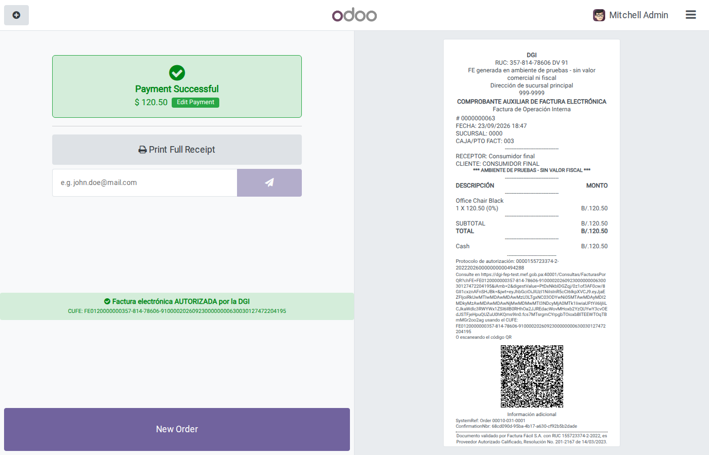
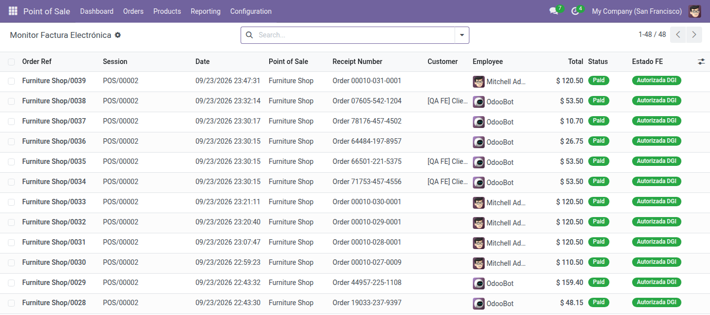
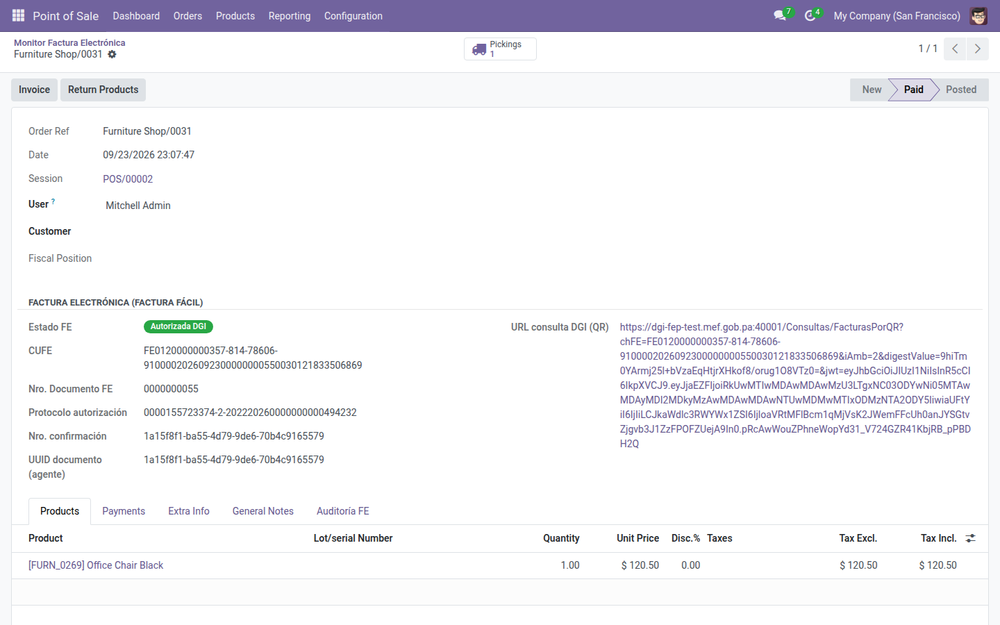
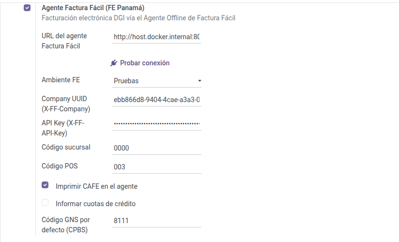
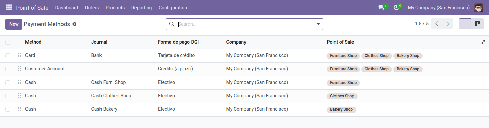

Cada venta que se cobra en la caja se firma, se envía a la DGI y vuelve con CUFE y QR oficial, que se imprimen en el recibo como CAFE. El cajero no hace nada distinto, y una caída del agente nunca bloquea la venta.

Todas las ventas con su estado fiscal, con filtros listos para lo que necesita atención.

CUFE, número fiscal, protocolo de autorización, QR oficial y la auditoría del envío.



qrcode para imprimir la imagen del QR en el recibo.